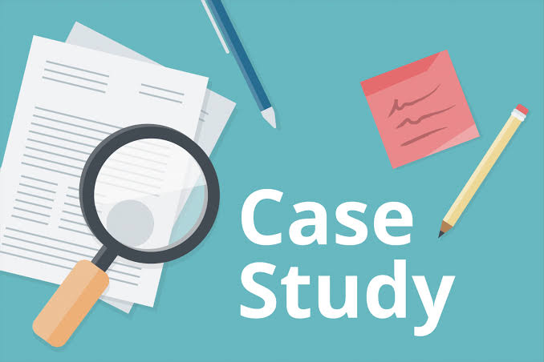
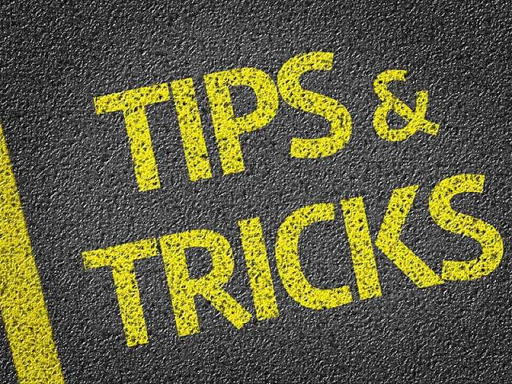

In this section you will get contents like case studies or which needed some additional detailing with data.
Also studies on people's psychology and their behavior. How we can attend meetings and get important talks in a different and productive way.
This will not only help you get better personality and make you likable to all around but also helps you in your workplace.
So this section will be definitely useful and effective for learnees like you.
Join with us and start your new journey from here. You will surely satisfied with the content designed especially for you.
Do waste your precise time any more and use it to evolve a better yourself.
So please go through this and enjoy and don't forget to SUBSCRIBE the channel.
Go To Top...
You know that life is consist of challenges, love, relationship, success, failure, time management, leadership, enjoyment, sleep, tension, stress, happiness and different aspects.
Still we always keep trapped in such situation which we are mostly unable to handle. So management in life has its own value. We have to develop managerial skills, behavioral skills, time management skills etc.
All such things often confuses us and we don't know how to get over them. So this channel will surely help you in such situation.
You will feel confidence and energetic after our sessions. Also you will excel in your various aspects of life.
So SUBSCRIBE our channel and stay connected. Go To Top...

In our workplace there are lots of traditional methods which are too lengthy and time taking too. Apart from that they are often confusing and some times leads irritations.
So we have all that enough required tips and techniques which helps in such kind of situations and also prove too be easy and mostly accurate.
These tips and techniques will be beneficial to your daily life or professional life. This will surely helps you to get what you're desired.
Also your workplace looks to be so easy and interesting.
So to get benefitted just SUBSCRIBE our channel and enjoy. Go To Top...